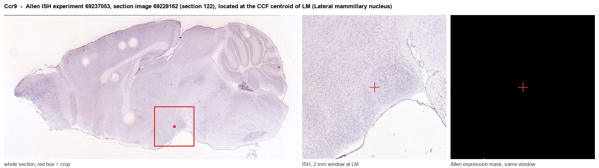
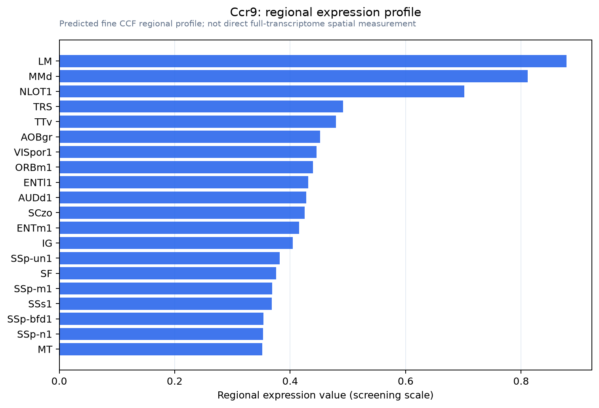

Ccr9
C-C chemokine receptor type 9 (C-C CKR-9) (CC-CKR-9) (CCR-9) (Chemokine C-C receptor 10) (CD antigen CDw199)
Spatial tier: RESTRICTED · Class: GPCR · Top region: LM (Lateral mammillary nucleus) · Positive regions: 27/554
43.0Discovery Score
37.7Targetability Score
CEvidence grade C
What this means: Ccr9: fine CCF profile is restricted toward LM (top regions: LM, MMd, NLOT1, TRS, TTv; 27 positive regions); direct spatial validation is still required.
Function in LM: evidence, prediction, innovation
- Gene function
- CCR9 is a Gi-coupled class A chemokine receptor whose only ligand is CCL25 (TECK). Activation triggers actin remodelling and directed migration, and CCR9 is the address code that directs thymocytes and effector T cells to the thymus and small intestine. It is a validated drug target in inflammatory bowel disease, where the antagonist vercirnon was developed.
- Region function
- The lateral mammillary nucleus is the mammillary head-direction relay: it receives vestibular information via the dorsal tegmental nucleus and projects through the mammillothalamic tract to the anterodorsal thalamus, generating the earliest directional-heading signal in the Papez circuit.
- Published in this region
- inferred No region-specific literature found. The closest central nervous system report is Liu et al. 2007, who detected Ccr9 among chemokine receptors upregulated in mouse hippocampal CA1 and dentate gyrus after pilocarpine-induced status epilepticus; no hypothalamic or mammillary expression or function has been described.
- Predicted function
- Prediction: rather than a neuronal signalling receptor, CCR9 in the lateral mammillary nucleus most plausibly marks a resident or recruited T-cell and myeloid population, or a small set of neurons in which chemokine signalling modulates excitability as CXCR4 and CX3CR1 do elsewhere. Ccr9 deletion or vercirnon treatment is predicted to leave baseline head-direction function untouched but to reduce lymphocyte accumulation in the mammillary region after systemic immune challenge and to blunt inflammation-associated deficits in spatial orientation; if instead CCR9 proves neuronal, local CCL25 should acutely depolarise LM cells and perturb head-direction stability.
- Innovation
- ★★★★☆ 4/5 No one has looked at CCR9 in brain outside a single hippocampal epilepsy study and the tools are clinical-grade, but a chemokine receptor in a small head-direction nucleus has a modest prior probability of being neuronally important.
- Tools
- Ccr9 knockout and Ccr9-GFP reporter mice; CCR9 antagonist vercirnon (CCX282-B) and CCX8037; CCL25 ligand; anti-CCR9 antibodies and flow-cytometry panels; LM circuit access via retrograde AAV from anterodorsal thalamus.
- References
Direct evidence located at the region

Allen ISH experiment 69237053, section image 69228162 (section 122): the section that contains the CCF centroid of Lateral mammillary nucleus according to the Allen image-to-atlas alignment (reference_to_image), with a 2 mm window around that point. Left: whole section, red box = window. Middle: ISH signal. Right: Allen's expression-mask view of the same window. open this image in the Allen viewer
Look it up yourself: Allen Mouse Brain ISH for Ccr9Allen reference atlas: LM (structure 210)ABC Atlas MERFISH viewer(in the ABC Atlas choose dataset MERFISH-C57BL6J-638850-CCF, colour cells by gene "Ccr9" or by parcellation_substructure "LM")All genes confined to LM + 3-D brain
Direct spatial evidence
MERFISH REGION LOCATOR

Regional expression figure

Predicted WMB × fine-CCF profile; not direct full-transcriptome spatial measurement.
Spatial profile
Evidence and specificity
- Evidence status
- PREDICTED_FINE
- Direct sources
- None; predicted localization only
- Exclusive threshold
- 12 positive regions out of 554
- Spatial specificity
- 0.311
- Top-region fraction
- 0.058
- Filter status
- PASS
Interpretation limits
- Cell-type-to-region projection is imputed expression, not direct spatial measurement.
- Adult reference atlases do not establish stability across age, sex, strain, state, or disease.
- Transcript abundance does not guarantee protein abundance or genetic-tool performance.